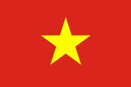
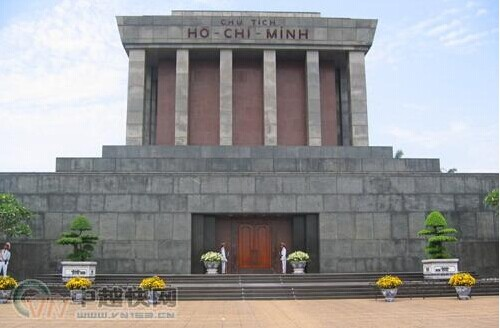
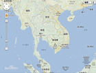

- 越南国旗
- 越南国徽
- 越南标志性建筑
- 越南地理位置
越南概况
越南位于中南半岛东部
人口概况
人口8700万(2010年底), 其中男性4185万, 占49.15%, 女性4330万, 占50.85%。
越南经济
越南属发展中国家。1986年开始实行革新开放。1996年越共八大提出要大力推进国家工业化、现代化。2001年越共九大确定建立社会主义定向的市场经济体制, 并确定了三大经济战略重点, 即以工业化和现代化为中心, 发展多种经济成份、发挥国有经济主导地位, 建立市场经济的配套管理体制。经过二十年的革新, 越经济保持较快增长, 1990-2006年国内生产总值年均增长7.7%, 经济总量不断扩大, 三产结构趋向协调, 对外开放水平不断提高, 基本形成了以国有经济为主导、多种经济成分共同发展的格局。
外交关系
对外关系 奉行全方位、多样化的独立自主外交政策, 重视发展同周边国家和大国的关系, 积极参与地区和国际事务。其对外工作重点是“融入国际社会、搞好周边关系、妥善处理大国关系”。2006年积极开展对外交往, 地区和国际地位日益提高。越成功举办APEC领导人非正式会议, 被世贸组织接纳为第150个成员, 被亚洲国家推举为2008-2009年任期联合国安理会非常任理事国亚洲唯一候选国。2006年, 共有12位外国元首, 17位正、副总理, 12位国会正、副议长访问越南。现已与169个国家建交, 并同20个国际组织及480多个非政府组织建立合作关系。
经贸往来
越南和世界上150多个国家和地区有贸易关系。近年来越对外贸易保持高速增长, 对拉动经济发展起到了重要作用。2009年商品进出口贸易总额约为1254亿美元, 贸易逆差122亿美元。其中出口566亿美元, 下降9.7%；进口688亿美元, 下降14.7%。